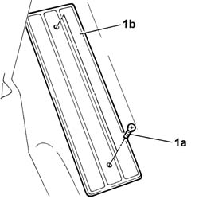

7040L50 DRIVER'S FOOTREST - R.R.
- Path
- Procedures > 70 FITTINGS > 7040 BODY INTERIOR UPHOLSTERY AND TRIM > 7040L PASSGNER COMPARTMENT FLOOR COVERING > 7040L50 DRIVER'S FOOTREST - R.R.
- Kind
- repair procedure (removal / refitting; the operation number is the code)
- Applies to
- all engines; all production periods
- Interactive page
- https://sloeber94.github.io/elrnDB-lThss/en/#/126635
Applies to: all engines; all production periods
 Removing
Removing
 Refitting
Refitting1. Undo the fixing bolts (1a) and remove the footrest (1b).

Applies to: all engines; all production periods
Refitting
Removing- Position the footrest and secure it using the bolts.